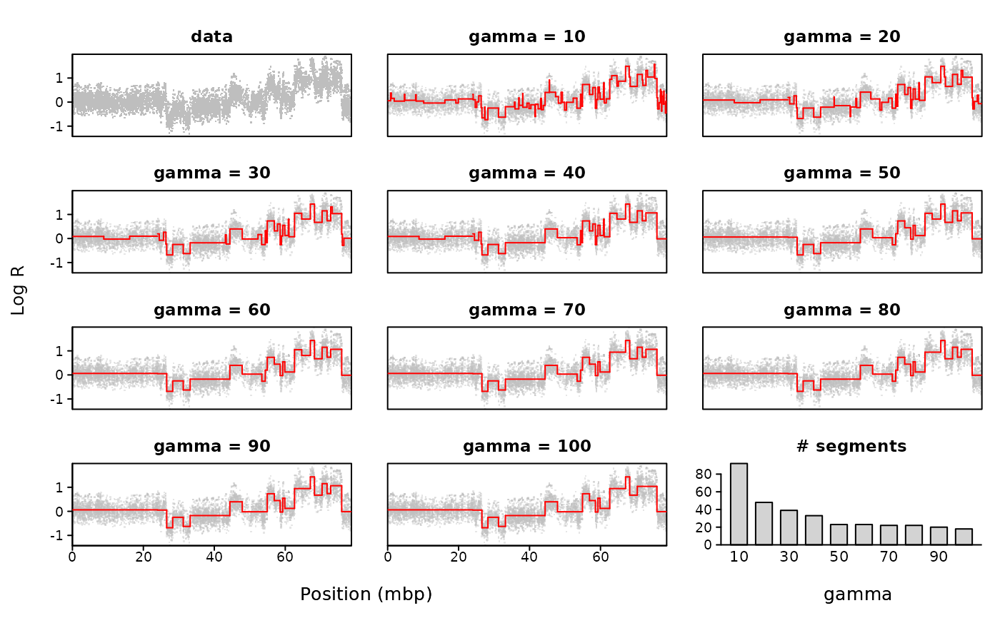

Data for one sample on one chromosome is segmented by pcf for 10
values of gamma, and results are visualized in a multi-grid plot.
Usage
plotGamma(
data,
pos.unit = "bp",
gammaRange = c(10, 100),
dowins = TRUE,
sample = 1,
chrom = 1,
cv = FALSE,
K = 5,
cex = 2,
col = "grey",
seg.col = "red",
...
)Arguments
- data
either a data frame or the name of a tab-separated file from which copy number data can be read. The rows of the data frame or file should represent the probes. Column 1 must hold numeric or character chromosome numbers, column 2 the numeric local probe positions, and subsequent column(s) the numeric copy number measurements for one or more samples. The header of copy number columns should give sample IDs.
- pos.unit
the unit used to represent the probe positions. Allowed options are "mbp" (mega base pairs), "kbp" (kilo base pairs) or "bp" (base pairs). By default assumed to be "bp".
- gammaRange
a vector of length two giving the lowest and highest value of gamma to be applied. 10 (approximately) equally spaced values within this range are applied in the pcf-segmentation. Default range is
c(10,100).- dowins
logical value indicating whether data should be winsorized before running
pcf. Default is TRUE.- sample
an integer indicating which sample is to be segmented. The number should correspond to the sample's place (in order of appearance) in
data. Default is to use the first sample present in the data input.- chrom
a number or character indicating which chromosome is to be segmented. Default is chromosome 1.
- cv
logical value indicating whether K-fold cross-validation should be done, see details.
- K
the number of folds to use in K-fold cross-validation, default is 5.
- cex
size of data points, default is 2.
- col
color used to plot data points, default is "grey".
- seg.col
color used to plot segments, default is "red".
- ...
other optional parameters to be passed to
pcf.
Value
If cv = TRUE a list containing:
- gamma
the gamma values applied.
- pred.error
the average prediction error for each value of gamma.
- opt.gamma
the gamma for which the average prediction error is minimized.
Details
Data for one sample and one chromosome is selected, and pcf is run on
this data subset while applying 10 different gamma-values (within the given
range). The output is a multi-grid plot with the data shown in the first
panel, the segmentation results for the various gammas in the subsequent 10
panels, and the number of segments found for each gamma in the last panel.
If cv = TRUE a K-fold cross-validation is also performed. For each
fold, a random (100/K) per cent of the data are set to be missing, and
pcf is run using the different values of gamma. The missing
probe values are then predicted by the estimated value of their closest
non-missing neighbour (see pcf on this), and the prediction error for
this fold is then calculated as the sum of the squared difference between
the predicted and the observed values. The process is repeated over the K
folds, and the average prediction errors are finally plotted along with the
number of segments in the last panel of the plot. The value of gamma for
which the minimum prediction error is found is marked by an asterix. Note
that such cross-validation tends to favor small values of gamma, and the
suitability of the so-called optimal gamma from this procedure should be
critically assessed.
Note
This function applies par(fig), and is therefore not compatible
with other setups for arranging multiple plots in one device such as
par(mfrow,mfcol).
Examples
#Micma data
data(micma)
plotGamma(micma,chrom=17)
